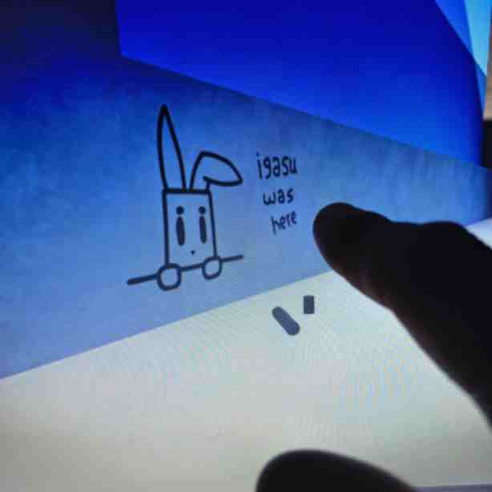
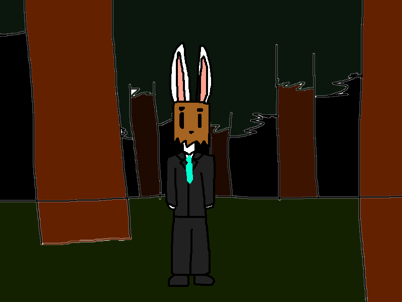

Est. 1999, The on-line capital of the supernatural
Ghosts -> Digital Apparitions -> IGASU (You are here)
Over the last decade, many internet users have reported sightings of a strange, rabbit-like character watching them from afar or messing ever-so-slightly with their experience in multiple video games, on both consoles and personal computers.
Unlike something like smile.jpg or Ben (both previously covered in this webpage), this being doesn't seem malicious in nature.
The name IGASU (stylized in all caps) was chosen for this entity, based on one of its reported apparitions.
As of when this page was last updated, this entity's origin and intentions remain a mystery.

The viral sighting that gave the entity its name, seen here as graffiti in an on-line game

A drawn mockup of a sighting in a reader's minecraft game
"At first I thought someone had joined my world through lan, but looking at that tab menu, I was the only player here. He just kept staring at me."
Please be on the lookout for this rare entity, and if you have any concrete photo evidence, send them my way.